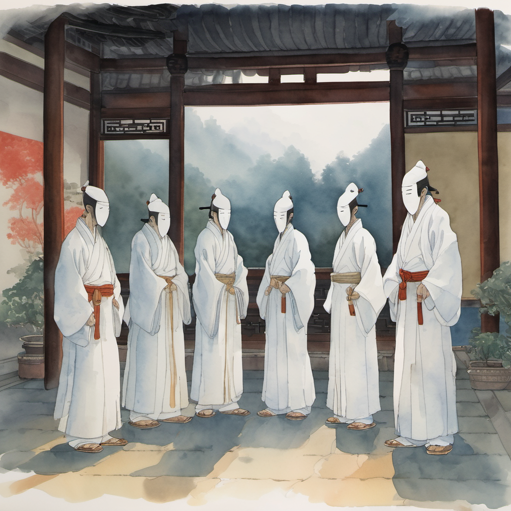
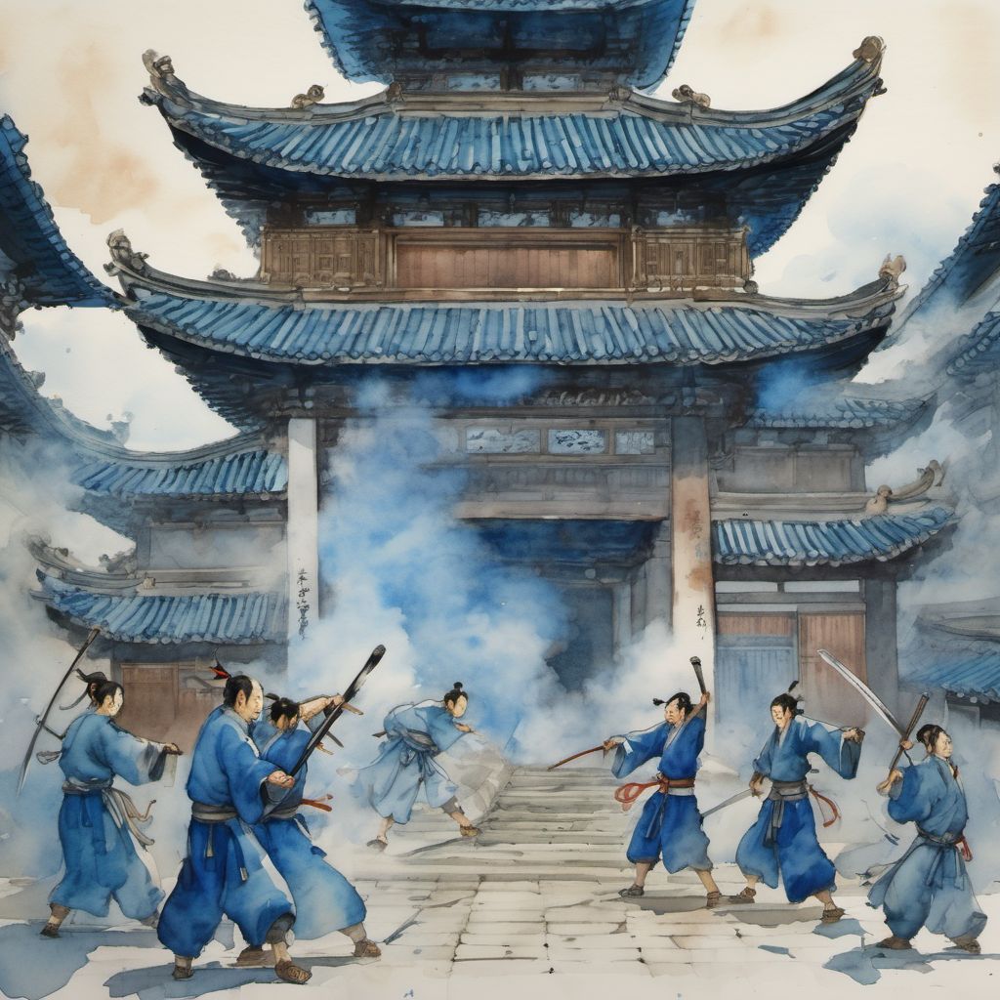
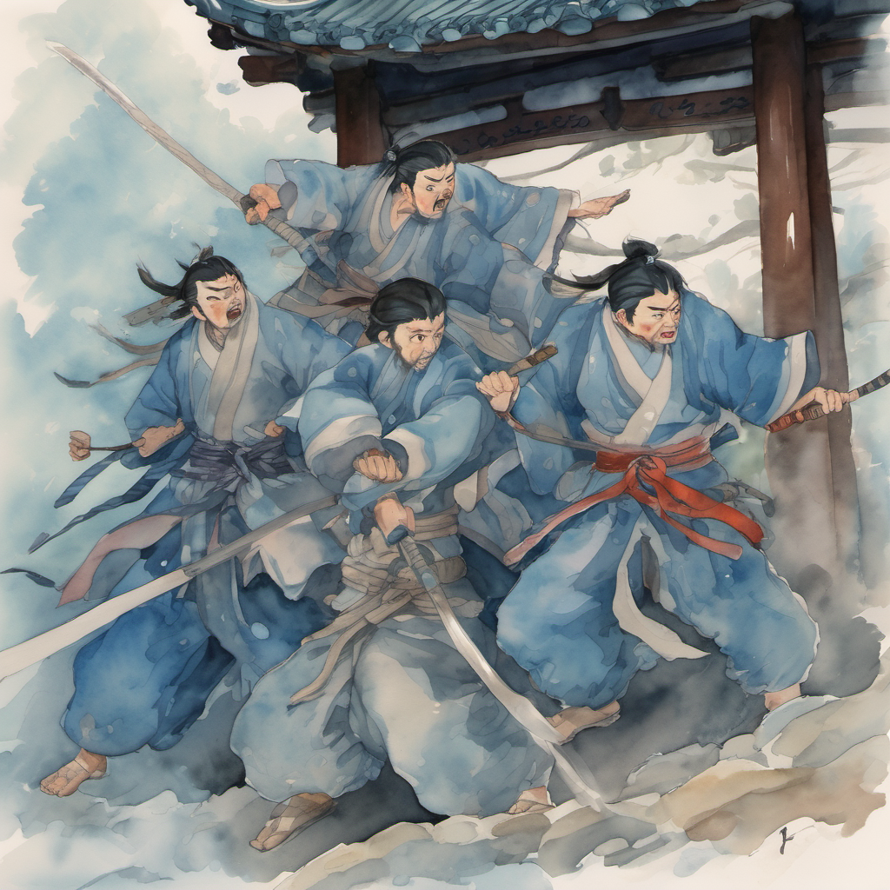
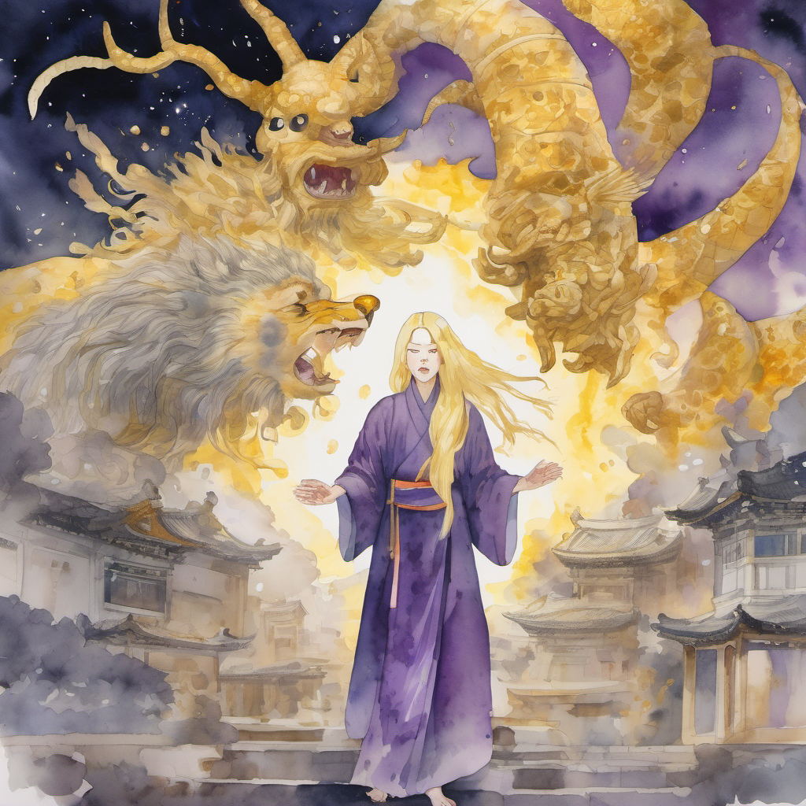
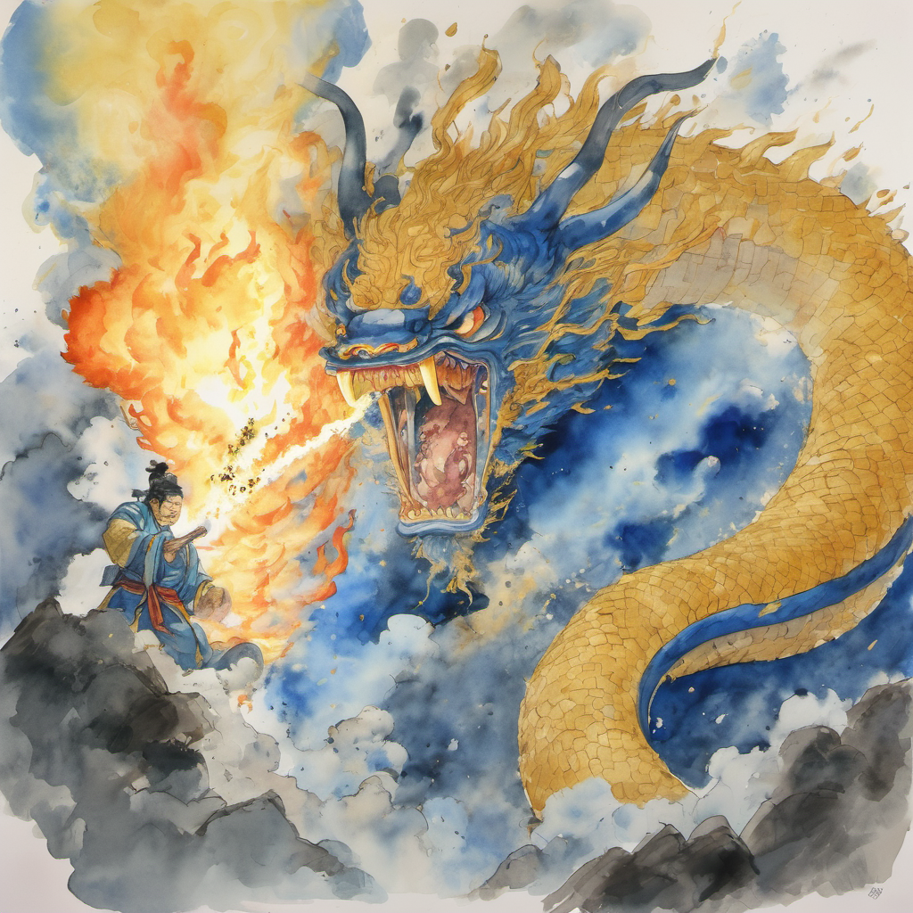
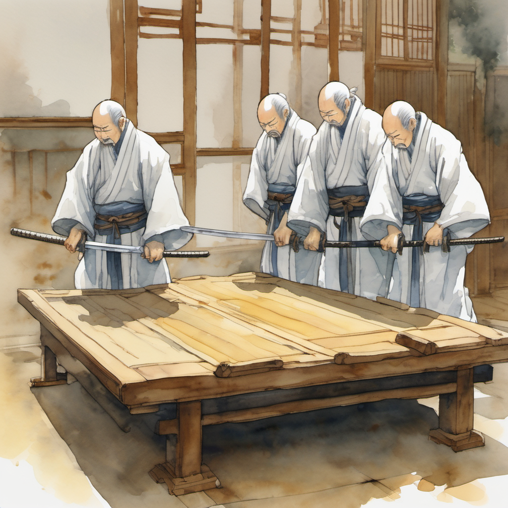
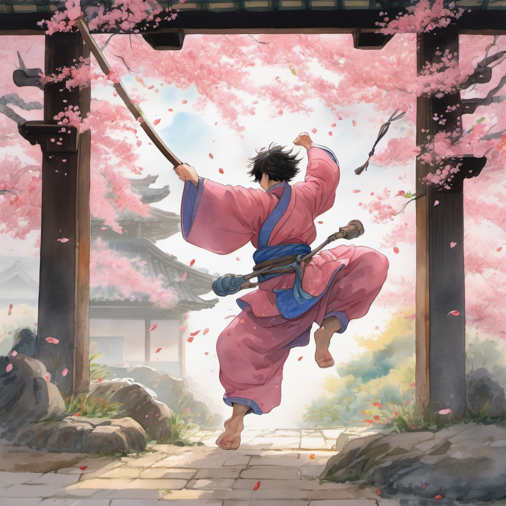
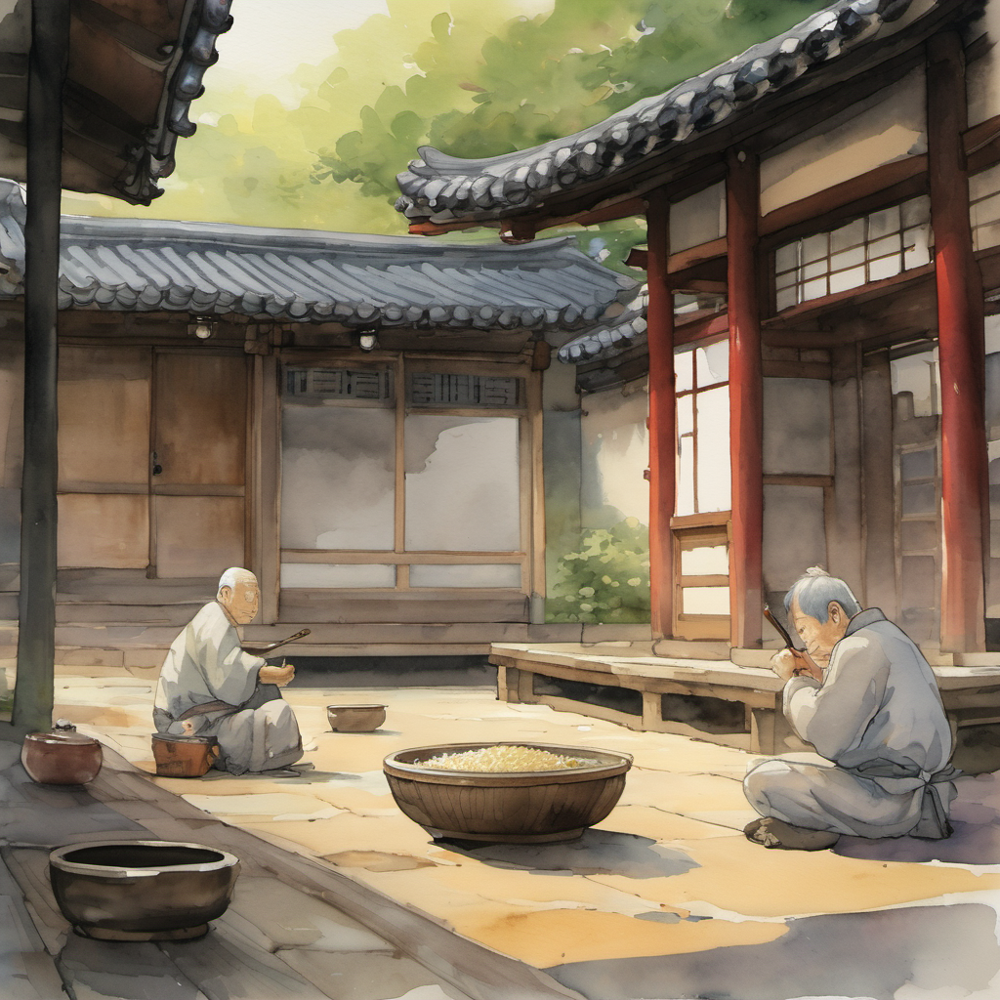

5방위 진형

10화의 막걸리 한 사발이 — 다섯 명의 HP를 — 황금빛으로 차오르게 한 — 다음 날 새벽. 무당파 객점 마당에 — 다섯 명의 청년 검수가 — 다시 섰다.
청천이 — 가운데 — 한 명. 그 좌우로 — 동(東) — 서(西) — 남(南) — 북(北) — 4명. 합 다섯 명. 4방위 + 중앙 — 의 — 5방위 진형. 7화의 — 4방위 — 보다 — 한 단계 — 위.
오방위 정렬진 발동

5개의 검 끝이 — 한 점에서 — 한 번 — 만났다 — 그리고 — 그 한 점에서 — 한 줄기 — 푸른 — 검기(劍氣)가 — 한 번 — 흘러내렸다. 검기가 — 정주 일행 다섯 명의 — 어깨 — 위로 — 한 번 — 떨어졌다.
몸이 늪에 빠진 것처럼

그 순간 — 다섯 명의 — 몸이 — 한 번에 — 무거워졌다.
유교 드래곤 발현 ⭐⭐⭐

월자의 — 검은 그림자가 — 한 번 — 슬레이어의 — 등 — 뒤로 — 한 마리의 — 거대한 — 짐승의 — 형상으로 — 한 번 — 솟아올랐다.
머리 — 4개. 뿔 — 8개. 비늘 — 황금. 눈 — 다섯. 고려 말의 — 그 어떤 무속서에도 — 적혀 있지 — 않은 — 형상.
드래곤이 도(道)를 먹다

유교 드래곤이 — 한 번 — 입을 — 벌렸다. 4개의 입에서 — 한 번에 — 황금빛 — 불꽃이 — 솟아올랐다. 그 불꽃이 — 5방위 정렬진의 — 5개의 검 끝에서 — 한 점으로 — 모였던 — 그 — 푸른 검기를 — 한 번에 — 먹었다.
푸른 검기가 — 한 번에 — 사라졌다.
강제 폴더 인사 디버프

5명의 청년 검수가 — 한 번에 — 무릎을 — 꿇었다. 5명이 — 한 번에 — 90도로 — 허리를 — 굽혔다 — 강제 — 폴더 — 인사.
무휼 회전 베기 — 매화꽃 다섯 송이

무휼이 — H빔을 — 한 번 — 양손에 — 잡았다. 5cm 어긋남이 — 한 번 — 발동. 그리고 — 한 번 — 회전 베기. 60kg의 H빔이 — 한 번 — 객점 마당의 — 다섯 그루 — 매화나무의 — 꼭대기를 — 한 번에 — 베어 갔다. 매화꽃 — 다섯 송이가 — 한 번에 — 떨어졌다.
매화꽃이 — 5명의 청년 검수의 — 폴더 인사 한 — 등 — 위로 — 한 번에 — 떨어졌다.
홍대걸이 — 박자 강타 — 한 번 — 갈겼다. 5명의 등 가운데에 — 한 번씩 — 황금빛 — 손바닥 자국이 — 박혔다. 5명이 — 한 번 — 더 — 깊게 — 폴더 인사를 — 갈겼다. 90도가 — 95도로 — 깊어졌다.
무당파 두 번째 시험 실패 — 12화 예고

도비 신수는 — 인천 옥탑방에서 — 한 번 — 더 — 잠을 — 자고 — 있었다. 12화의 — 무명 사부의 — 합부터 — 도비 신수가 — 한 번 — 더 — 깊은 — 잠 — 에서 — 한 쪽 귀를 — 한 번 — 세울 것이었다.
(2권 11화 끝)